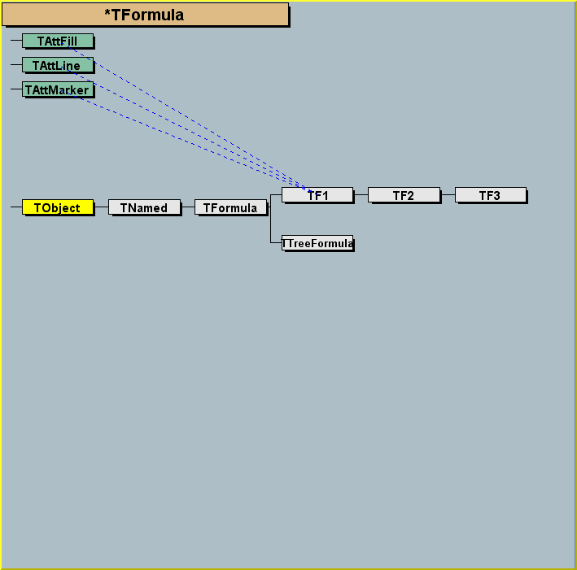
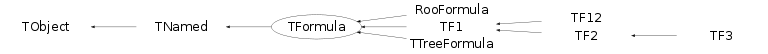
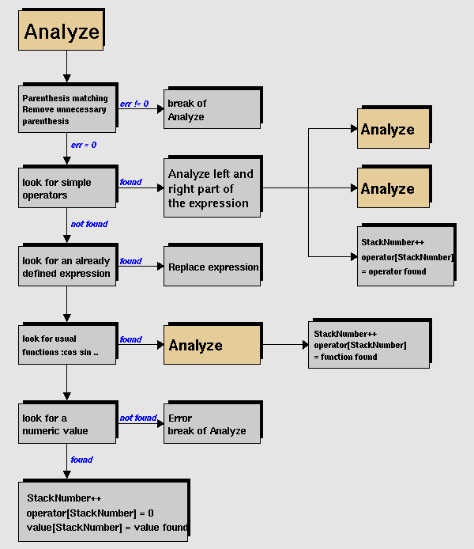
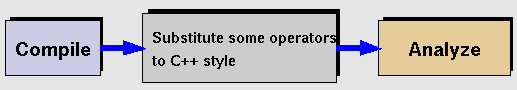
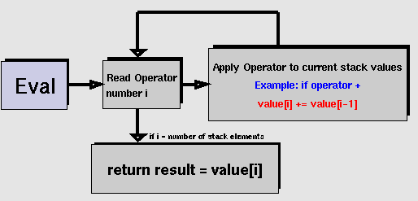

class TFormula: public TNamed
The F O R M U L A class*-*-*-*- *-* ========================= - *-* This class has been implemented by Nicolas Brun (age 18). *-* =========================================================/*  */
- *-* Example of valid expressions: *-* - sin(x)/x *-* - [0]*sin(x) + [1]*exp(-[2]*x) *-* - x + y**2 *-* - x^2 + y^2 *-* - [0]*pow([1],4) *-* - 2*pi*sqrt(x/y) *-* - gaus(0)*expo(3) + ypol3(5)*x *-* - gausn(0)*expo(3) + ypol3(5)*x - *-* In the last example above: *-* gaus(0) is a substitute for [0]*exp(-0.5*((x-[1])/[2])**2) *-* and (0) means start numbering parameters at 0 *-* gausn(0) is a substitute for [0]*exp(-0.5*((x-[1])/[2])**2)/(sqrt(2*pi)*[2])) *-* and (0) means start numbering parameters at 0 *-* expo(3) is a substitute for exp([3]+[4]*x) *-* pol3(5) is a substitute for par[5]+par[6]*x+par[7]*x**2+par[8]*x**3 *-* (here Pol3 stands for Polynomial of degree 3) - *-* TMath functions can be part of the expression, eg: *-* - TMath::Landau(x)*sin(x) *-* - TMath::Erf(x) - *-* Comparisons operators are also supported (&&, ||, ==, <=, >=, !) *-* Examples: *-* sin(x*(x<0.5 || x>1)) *-* If the result of a comparison is TRUE, the result is 1, otherwise 0. - *-* Already predefined names can be given. For example, if the formula *-* TFormula old(sin(x*(x<0.5 || x>1))) one can assign a name to the formula. By default *-* the name of the object = title = formula itself. *-* old.SetName("old"). *-* then, old can be reused in a new expression. *-* TFormula new("x*old") is equivalent to: *-* TFormula new("x*sin(x*(x<0.5 || x>1))") - *-* Up to 4 dimensions are supported (indicated by x, y, z, t) *-* An expression may have 0 parameters or a list of parameters *-* indicated by the sequence [par_number] - *-* A graph showing the logic to compile and analyze a formula *-* is shown in TFormula::Compile and TFormula::Analyze. *-* Once a formula has been compiled, it can be evaluated for a given *-* set of parameters. see graph in TFormula::EvalPar. - *-* This class is the base class for the function classes TF1,TF2 and TF3. *-* It is also used by the ntuple selection mechanism TNtupleFormula. - *-* In version 7 of TFormula, the usage of fOper has been changed *-* to improve the performance of TFormula::EvalPar. *-* Conceptually, fOper was changed from a simple array of Int_t *-* to an array of composite values. *-* For example a 'ylandau(5)' operation used to be encoded as 4105; *-* it is now encoded as (klandau >> kTFOperShit) + 5 *-* Any class inheriting from TFormula and using directly fOper (which *-* is now a private data member), needs to be updated to take this *-* in consideration. The member functions recommended to set and *-* access fOper are: SetAction, GetAction, GetActionParam *-* For more performant access to the information, see the implementation *-* TFormula::EvalPar - *-* CHANGING DEFAULT SETTINGS *-* ========================= *-* When creating complex formula , it may be necessary to increase *-* some default parameters. see static function TFormula::SetMaxima - *-* WHY TFormula CANNOT ACCEPT A CLASS MEMBER FUNCTION ? *-* ==================================================== *-* This is a frequently asked question. *-* C++ is a strongly typed language. There is no way for TFormula (without *-* recompiling this class) to know about all possible user defined data types. *-* This also apply to the case of a static class function. *-* Because TMath is a special and frequent case, TFormula is aware *-* of all TMath functions. - -
Function Members (Methods)
public:
| TFormula() | |
| TFormula(const TFormula& formula) | |
| TFormula(const char* name, const char* formula) | |
| virtual | ~TFormula() |
| void | TObject::AbstractMethod(const char* method) const |
| virtual void | Analyze(const char* schain, Int_t& err, Int_t offset = 0) |
| virtual Bool_t | AnalyzeFunction(TString& chaine, Int_t& err, Int_t offset = 0) |
| virtual void | TObject::AppendPad(Option_t* option = "") |
| virtual void | TObject::Browse(TBrowser* b) |
| static TClass* | Class() |
| virtual const char* | TObject::ClassName() const |
| virtual void | Clear(Option_t* option = "") |
| virtual TObject* | TNamed::Clone(const char* newname = "") const |
| virtual Int_t | TNamed::Compare(const TObject* obj) const |
| virtual Int_t | Compile(const char* expression = "") |
| virtual void | Copy(TObject& formula) const |
| virtual char* | DefinedString(Int_t code) |
| virtual Double_t | DefinedValue(Int_t code) |
| virtual Int_t | DefinedVariable(TString& variable, Int_t& action) |
| virtual void | TObject::Delete(Option_t* option = "")MENU |
| virtual Int_t | TObject::DistancetoPrimitive(Int_t px, Int_t py) |
| virtual void | TObject::Draw(Option_t* option = "") |
| virtual void | TObject::DrawClass() constMENU |
| virtual TObject* | TObject::DrawClone(Option_t* option = "") constMENU |
| virtual void | TObject::Dump() constMENU |
| virtual void | TObject::Error(const char* method, const char* msgfmt) const |
| virtual Double_t | Eval(Double_t x, Double_t y = 0, Double_t z = 0, Double_t t = 0) const |
| virtual Double_t | EvalPar(const Double_t* x, const Double_t* params = 0) |
| virtual Double_t | EvalParOld(const Double_t* x, const Double_t* params = 0) |
| virtual void | TObject::Execute(const char* method, const char* params, Int_t* error = 0) |
| virtual void | TObject::Execute(TMethod* method, TObjArray* params, Int_t* error = 0) |
| virtual void | TObject::ExecuteEvent(Int_t event, Int_t px, Int_t py) |
| virtual void | TObject::Fatal(const char* method, const char* msgfmt) const |
| virtual void | TNamed::FillBuffer(char*& buffer) |
| virtual TObject* | TObject::FindObject(const char* name) const |
| virtual TObject* | TObject::FindObject(const TObject* obj) const |
| virtual Option_t* | TObject::GetDrawOption() const |
| static Long_t | TObject::GetDtorOnly() |
| virtual TString | GetExpFormula(Option_t* option = "") const |
| virtual const char* | TObject::GetIconName() const |
| virtual const TObject* | GetLinearPart(Int_t i) |
| virtual const char* | TNamed::GetName() const |
| virtual Int_t | GetNdim() const |
| virtual Int_t | GetNpar() const |
| virtual Int_t | GetNumber() const |
| virtual char* | TObject::GetObjectInfo(Int_t px, Int_t py) const |
| static Bool_t | TObject::GetObjectStat() |
| virtual Option_t* | TObject::GetOption() const |
| Double_t | GetParameter(Int_t ipar) const |
| Double_t | GetParameter(const char* name) const |
| virtual Double_t* | GetParameters() const |
| virtual void | GetParameters(Double_t* params) |
| virtual const char* | GetParName(Int_t ipar) const |
| virtual Int_t | GetParNumber(const char* name) const |
| virtual const char* | TNamed::GetTitle() const |
| virtual UInt_t | TObject::GetUniqueID() const |
| virtual Bool_t | TObject::HandleTimer(TTimer* timer) |
| virtual ULong_t | TNamed::Hash() const |
| virtual void | TObject::Info(const char* method, const char* msgfmt) const |
| virtual Bool_t | TObject::InheritsFrom(const char* classname) const |
| virtual Bool_t | TObject::InheritsFrom(const TClass* cl) const |
| virtual void | TObject::Inspect() constMENU |
| void | TObject::InvertBit(UInt_t f) |
| virtual TClass* | IsA() const |
| virtual Bool_t | TObject::IsEqual(const TObject* obj) const |
| virtual Bool_t | TObject::IsFolder() const |
| virtual Bool_t | IsLinear() |
| virtual Bool_t | IsNormalized() |
| Bool_t | TObject::IsOnHeap() const |
| virtual Bool_t | TNamed::IsSortable() const |
| Bool_t | TObject::IsZombie() const |
| virtual void | TNamed::ls(Option_t* option = "") const |
| void | TObject::MayNotUse(const char* method) const |
| virtual Bool_t | TObject::Notify() |
| void | TObject::Obsolete(const char* method, const char* asOfVers, const char* removedFromVers) const |
| static void | TObject::operator delete(void* ptr) |
| static void | TObject::operator delete(void* ptr, void* vp) |
| static void | TObject::operator delete[](void* ptr) |
| static void | TObject::operator delete[](void* ptr, void* vp) |
| void* | TObject::operator new(size_t sz) |
| void* | TObject::operator new(size_t sz, void* vp) |
| void* | TObject::operator new[](size_t sz) |
| void* | TObject::operator new[](size_t sz, void* vp) |
| TFormula& | operator=(const TFormula& rhs) |
| void | Optimize() |
| virtual void | TObject::Paint(Option_t* option = "") |
| virtual void | TObject::Pop() |
| virtual void | Print(Option_t* option = "") constMENU |
| virtual void | ProcessLinear(TString& replaceformula) |
| virtual Int_t | TObject::Read(const char* name) |
| virtual void | TObject::RecursiveRemove(TObject* obj) |
| void | TObject::ResetBit(UInt_t f) |
| virtual void | TObject::SaveAs(const char* filename = "", Option_t* option = "") constMENU |
| virtual void | TObject::SavePrimitive(ostream& out, Option_t* option = "") |
| void | TObject::SetBit(UInt_t f) |
| void | TObject::SetBit(UInt_t f, Bool_t set) |
| virtual void | TObject::SetDrawOption(Option_t* option = "")MENU |
| static void | TObject::SetDtorOnly(void* obj) |
| static void | SetMaxima(Int_t maxop = 1000, Int_t maxpar = 1000, Int_t maxconst = 1000) |
| virtual void | TNamed::SetName(const char* name)MENU |
| virtual void | TNamed::SetNameTitle(const char* name, const char* title) |
| virtual void | SetNumber(Int_t number) |
| static void | TObject::SetObjectStat(Bool_t stat) |
| virtual void | SetParameter(const char* name, Double_t parvalue) |
| virtual void | SetParameter(Int_t ipar, Double_t parvalue) |
| virtual void | SetParameters(const Double_t* params) |
| virtual void | SetParameters(Double_t p0, Double_t p1, Double_t p2 = 0, Double_t p3 = 0, Double_t p4 = 0, Double_t p5 = 0, Double_t p6 = 0, Double_t p7 = 0, Double_t p8 = 0, Double_t p9 = 0, Double_t p10 = 0)MENU |
| virtual void | SetParName(Int_t ipar, const char* name) |
| virtual void | SetParNames(const char* name0 = "p0", const char* name1 = "p1", const char* name2 = "p2", const char* name3 = "p3", const char* name4 = "p4", const char* name5 = "p5", const char* name6 = "p6", const char* name7 = "p7", const char* name8 = "p8", const char* name9 = "p9", const char* name10 = "p10")MENU |
| virtual void | TNamed::SetTitle(const char* title = "")MENU |
| virtual void | TObject::SetUniqueID(UInt_t uid) |
| virtual void | ShowMembers(TMemberInspector& insp) |
| virtual Int_t | TNamed::Sizeof() const |
| virtual void | Streamer(TBuffer& b) |
| void | StreamerNVirtual(TBuffer& b) |
| virtual void | TObject::SysError(const char* method, const char* msgfmt) const |
| Bool_t | TObject::TestBit(UInt_t f) const |
| Int_t | TObject::TestBits(UInt_t f) const |
| virtual void | Update() |
| virtual void | TObject::UseCurrentStyle() |
| virtual void | TObject::Warning(const char* method, const char* msgfmt) const |
| virtual Int_t | TObject::Write(const char* name = 0, Int_t option = 0, Int_t bufsize = 0) |
| virtual Int_t | TObject::Write(const char* name = 0, Int_t option = 0, Int_t bufsize = 0) const |
protected:
Data Members
public:
| enum { | kEnd | |
| kAdd | ||
| kSubstract | ||
| kMultiply | ||
| kDivide | ||
| kModulo | ||
| kcos | ||
| ksin | ||
| ktan | ||
| kacos | ||
| kasin | ||
| katan | ||
| katan2 | ||
| kfmod | ||
| kpow | ||
| ksq | ||
| ksqrt | ||
| kstrstr | ||
| kmin | ||
| kmax | ||
| klog | ||
| kexp | ||
| klog10 | ||
| kpi | ||
| kabs | ||
| ksign | ||
| kint | ||
| kSignInv | ||
| krndm | ||
| kAnd | ||
| kOr | ||
| kEqual | ||
| kNotEqual | ||
| kLess | ||
| kGreater | ||
| kLessThan | ||
| kGreaterThan | ||
| kNot | ||
| kcosh | ||
| ksinh | ||
| ktanh | ||
| kacosh | ||
| kasinh | ||
| katanh | ||
| kStringEqual | ||
| kStringNotEqual | ||
| kBitAnd | ||
| kBitOr | ||
| kLeftShift | ||
| kRightShift | ||
| kJumpIf | ||
| kJump | ||
| kexpo | ||
| kxexpo | ||
| kyexpo | ||
| kzexpo | ||
| kxyexpo | ||
| kgaus | ||
| kxgaus | ||
| kygaus | ||
| kzgaus | ||
| kxygaus | ||
| klandau | ||
| kxlandau | ||
| kylandau | ||
| kzlandau | ||
| kxylandau | ||
| kpol | ||
| kxpol | ||
| kypol | ||
| kzpol | ||
| kParameter | ||
| kConstant | ||
| kBoolOptimize | ||
| kStringConst | ||
| kVariable | ||
| kFunctionCall | ||
| kData | ||
| kUnary | ||
| kBinary | ||
| kThree | ||
| kDefinedVariable | ||
| kDefinedString | ||
| kPlusD | ||
| kPlusDD | ||
| kMultD | ||
| kMultDD | ||
| kBoolOptimizeOr | ||
| kBoolOptimizeAnd | ||
| kBoolSet | ||
| kFDM | ||
| kFD0 | ||
| kFD1 | ||
| kFD2 | ||
| kFD3 | ||
| kNotGlobal | ||
| kNormalized | ||
| kLinear | ||
| }; | ||
| enum TObject::EStatusBits { | kCanDelete | |
| kMustCleanup | ||
| kObjInCanvas | ||
| kIsReferenced | ||
| kHasUUID | ||
| kCannotPick | ||
| kNoContextMenu | ||
| kInvalidObject | ||
| }; | ||
| enum TObject::[unnamed] { | kIsOnHeap | |
| kNotDeleted | ||
| kZombie | ||
| kBitMask | ||
| kSingleKey | ||
| kOverwrite | ||
| kWriteDelete | ||
| }; |
protected:
| TBits | fAlreadyFound | ! cache for information |
| Double_t* | fConst | [fNconst] Array of fNconst formula constants |
| TString* | fExpr | [fNoper] List of expressions |
| TString* | fExprOptimized | ![fNOperOptimized] List of expressions |
| TObjArray | fFunctions | Array of function calls to make |
| TObjArray | fLinearParts | Linear parts if the formula is linear (contains '|' or "++") |
| Int_t | fNOperOptimized | !Number of operators after optimization |
| TString | TNamed::fName | object identifier |
| TString* | fNames | [fNpar] Array of parameter names |
| Int_t | fNconst | Number of constants |
| Int_t | fNdim | Dimension of function (1=1-Dim, 2=2-Dim,etc) |
| Int_t | fNoper | Number of operators |
| Int_t | fNpar | Number of parameters |
| Int_t | fNstring | Number of different constants character strings |
| Int_t | fNumber | formula number identifier |
| Int_t | fNval | Number of different variables in expression |
| TOperOffset* | fOperOffset | ![fNOperOptimized] Offsets of operrands |
| Int_t* | fOperOptimized | ![fNOperOptimized] List of operators. (See documentation for changes made at version 7) |
| G__p2memfunc | fOptimal | !pointer to optimal function |
| Double_t* | fParams | [fNpar] Array of fNpar parameters |
| TFormulaPrimitive** | fPredefined | ![fNPar] predefined function |
| TString | TNamed::fTitle | object title |
private:
| Int_t* | fOper | [fNoper] List of operators. (See documentation for changes made at version 7) |
Class Charts
{kind=link}
{kind=link}
{kind=link}
{kind=link}

Function documentation
TFormula(const char* name, const char* formula)
Normal Formula constructor*-*-*- *-* ==========================
Bool_t AnalyzeFunction(TString& chaine, Int_t& err, Int_t offset = 0)
Check if the chain as function call *-*- *-* ======================================= - *-* If you overload this member function, you also HAVE TO *-* never call the constructor: - *-* TFormula::TFormula(const char *name,const char *expression) - *-* and write your own constructor - *-* MyClass::MyClass(const char *name,const char *expression) : TFormula() - *-* which has to call the TFormula default constructor and whose implementation *-* should be similar to the implementation of the normal TFormula constructor - *-* This is necessary because the normal TFormula constructor call indirectly *-* the virtual member functions Analyze, DefaultString, DefaultValue *-* and DefaultVariable. -
void Analyze(const char* schain, Int_t& err, Int_t offset = 0)
Analyze a sub-expression in one formula*-*- *-* ======================================= - *-* Expressions in one formula are recursively analyzed. *-* Result of analysis is stored in the object tables. - *-* Table of function codes and errors *-* ================================== - *-* * functions : - *-* + 1 pow 20 *-* - 2 sq 21 *-* * 3 sqrt 22 *-* / 4 strstr 23 *-* % 5 min 24 *-* max 25 *-* log 30 *-* cos 10 exp 31 *-* sin 11 log10 32 *-* tan 12 *-* acos 13 abs 41 *-* asin 14 sign 42 *-* atan 15 int 43 *-* atan2 16 *-* fmod 17 rndm 50 - *-* cosh 70 acosh 73 *-* sinh 71 asinh 74 *-* tanh 72 atanh 75 - *-* expo 100 gaus 110 gausn (see note below) *-* expo(0) 100 0 gaus(0) 110 0 gausn(0) *-* expo(1) 100 1 gaus(1) 110 1 gausn(1) *-* xexpo 100 x xgaus 110 x xgausn *-* yexpo 101 x ygaus 111 x ygausn *-* zexpo 102 x zgaus 112 x zgausn *-* xyexpo 105 x xygaus 115 x xygausn *-* yexpo(5) 102 5 ygaus(5) 111 5 ygausn(5) *-* xyexpo(2) 105 2 xygaus(2) 115 2 xygausn(2) - *-* landau 120 x landaun (see note below) *-* landau(0) 120 0 landaun(0) *-* landau(1) 120 1 landaun(1) *-* xlandau 120 x xlandaun *-* ylandau 121 x ylandaun *-* zlandau 122 x zlandaun *-* xylandau 125 x xylandaun *-* ylandau(5) 121 5 ylandaun(5) *-* xylandau(2) 125 2 xylandaun(2) - *-* pol0 130 x pol1 130 1xx *-* pol0(0) 130 0 pol1(0) 130 100 *-* pol0(1) 130 1 pol1(1) 130 101 *-* xpol0 130 x xpol1 130 101 *-* ypol0 131 x ypol1 131 101 *-* zpol0 132 x zpol1 132 1xx *-* ypol0(5) 131 5 ypol1(5) 131 105 - *-* pi 40 - *-* && 60 < 64 *-* || 61 > 65 *-* == 62 <= 66 *-* != 63 => 67 *-* ! 68 *-* ==(string) 76 & 78 *-* !=(string) 77 | 79 *-* <<(shift) 80 >>(shift) 81 *_* ? : 82 - *-* * constants (kConstants) : - *-* c0 141 1 c1 141 2 etc.. - *-* * strings (kStringConst): - *-* sX 143 x - *-* * variables (kFormulaVar) : - *-* x 144 0 y 144 1 z 144 2 t 144 3 - *-* * parameters : - *-* [1] 140 1 *-* [2] 140 2 *-* etc. - *-* special cases for normalized gaussian or landau distributions *-* ============================================================= *-* the expression "gaus" is a substitute for *-* [0]*exp(-0.5*((x-[1])/[2])**2) *-* to obtain a standard normalized gaussian, use "gausn" instead of "gaus" *-* the expression "gausn" is a substitute for *-* [0]*exp(-0.5*((x-[1])/[2])**2)/(sqrt(2*pi)*[2])) *-* WARNING: gaus and gausn are mutually exclusive in the same expression. - *-* In the same way the expression "landau" is a substitute for *-* [0]*TMath::Landau(x,[1],[2],kFALSE) *-* to obtain a standard normalized landau, use "landaun" instead of "landau" *-* the expression "landaun" is a substitute for *-* [0]*TMath::Landau(x,[1],[2],kTRUE) *-* WARNING: landau and landaun are mutually exclusive in the same expression. - *-* boolean optimization (kBoolOptmize) : *-* ===================================== - *-* Those pseudo operation are used to implement lazy evaluation of *-* && and ||. When the left hand of the expression if false *-* (respectively true), the evaluation of the right is entirely skipped *-* (since it would not change the value of the expreession). - *-* && 142 11 (one operation on right) 142 21 (2 operations on right) *-* || 142 12 (one operation on right) 142 22 (2 operations on right) - *-* * functions calls (kFunctionCall) : - *-* f0 145 0 f1 145 1 etc.. - *-* errors : *-* ======== - *-* 1 : Division By Zero *-* 2 : Invalid Floating Point Operation *-* 4 : Empty String *-* 5 : invalid syntax *-* 6 : Too many operators *-* 7 : Too many parameters *-* 10 : z specified but not x and y *-* 11 : z and y specified but not x *-* 12 : y specified but not x *-* 13 : z and x specified but not y *-* 20 : non integer value for parameter number *-* 21 : atan2 requires two arguments *-* 22 : pow requires two arguments *-* 23 : degree of polynomial not specified *-* 24 : Degree of polynomial must be positive *-* 25 : Degree of polynomial must be less than 20 *-* 26 : Unknown name *-* 27 : Too many constants in expression *-* 28 : strstr requires two arguments *-* 29 : interpreted or compiled function have to return a numerical type *-* 30 : Bad numerical expression *-* 31 : Part of the variable exist but some of it is not accessible or useable *-* 40 : '(' is expected *-* 41 : ')' is expected *-* 42 : '[' is expected *-* 43 : ']' is expected/*  */
- *-* Special functions *-* ----------------- *-* By default, the formula is assigned fNumber=0. However, the following *-* formula built with simple functions are assigned fNumber: *-* "gaus" 100 (or gausn) *-* "xygaus" 110 *-* "expo" 200 *-* "polN" 300+N *-* "landau" 400 *-* "xylandau" 410 *-* Note that expressions like gaus(0), expo(1) will force fNumber=0 - *-* Warning when deriving a class from TFormula *-* ------------------------------------------- *-* If you overload this member function, you also HAVE TO *-* never call the constructor: - *-* TFormula::TFormula(const char *name,const char *expression) - *-* and write your own constructor - *-* MyClass::MyClass(const char *name,const char *expression) : TFormula() - *-* which has to call the TFormula default constructor and whose implementation *-* should be similar to the implementation of the normal TFormula constructor - *-* This is necessary because the normal TFormula constructor call indirectly *-* the virtual member functions Analyze, DefaultString, DefaultValue *-* and DefaultVariable. - -
Bool_t CheckOperands(Int_t operation, Int_t& err)
Check whether the operand at 'oper-1' is compatible with the operation at 'oper'.
Bool_t CheckOperands(Int_t leftoperand, Int_t rightoperartion, Int_t& err)
Check whether the operands at 'leftoper' and 'oper-1' are compatible with the operation at 'oper'.
Bool_t StringToNumber(Int_t code)
Try to 'demote' a string into an array bytes. If this is not possible, return false.
void Clear(Option_t* option = "")
Resets the objects*-*- *-* ================== - *-* Resets the object to its state before compilation. -
void ClearFormula(Option_t* option = "")
Resets the objects*-*- *-* ================== - *-* Resets the object to its state before compilation. -
Int_t Compile(const char* expression = "")
-*-*-*-*-*Compile expression already stored in fTitle *-* =========================================== - *-* Loop on all subexpressions of formula stored in fTitle - *-* If you overload this member function, you also HAVE TO *-* never call the constructor: - *-* TFormula::TFormula(const char *name,const char *expression) - *-* and write your own constructor - *-* MyClass::MyClass(const char *name,const char *expression) : TFormula() - *-* which has to call the TFormula default constructor and whose implementation *-* should be similar to the implementation of the normal TFormula constructor - *-* This is necessary because the normal TFormula constructor call indirectly *-* the virtual member functions Analyze, DefaultString, DefaultValue *-* and DefaultVariable. -/*  */
- -
char * DefinedString(Int_t code)
Return address of string corresponding to special code *-* ====================================================== - *-* This member function is inactive in the TFormula class. *-* It may be redefined in derived classes. - *-* If you overload this member function, you also HAVE TO *-* never call the constructor: - *-* TFormula::TFormula(const char *name,const char *expression) - *-* and write your own constructor - *-* MyClass::MyClass(const char *name,const char *expression) : TFormula() - *-* which has to call the TFormula default constructor and whose implementation *-* should be similar to the implementation of the normal TFormula constructor - *-* This is necessary because the normal TFormula constructor call indirectly *-* the virtual member functions Analyze, DefaultString, DefaultValue *-* and DefaultVariable. - *-*-*-*-*-*-*-*-*-*-*-*-*-*-*-*-*-*-*-*-*-*-*-*-*-*-*-*-*-*-*-*-*-*-*-*-*-*
Double_t DefinedValue(Int_t code)
Return value corresponding to special code*-*-*- *-* ========================================== - *-* This member function is inactive in the TFormula class. *-* It may be redefined in derived classes. - *-* If you overload this member function, you also HAVE TO *-* never call the constructor: - *-* TFormula::TFormula(const char *name,const char *expression) - *-* and write your own constructor - *-* MyClass::MyClass(const char *name,const char *expression) : TFormula() - *-* which has to call the TFormula default constructor and whose implementation *-* should be similar to the implementation of the normal TFormula constructor - *-* This is necessary because the normal TFormula constructor call indirectly *-* the virtual member functions Analyze, DefaultString, DefaultValue *-* and DefaultVariable. - *-*-*-*-*-*-*-*-*-*-*-*-*-*-*-*-*-*-*-*-*-*-*-*-*-*-*-*-*-*-*-*-*-*-*-*-*-*
Int_t DefinedVariable(TString& variable, Int_t& action)
-*Check if expression is in the list of defined variables *-* ======================================================= - *-* This member function can be overloaded in derived classes - *-* If you overload this member function, you also HAVE TO *-* never call the constructor: - *-* TFormula::TFormula(const char *name,const char *expression) - *-* and write your own constructor - *-* MyClass::MyClass(const char *name,const char *expression) : TFormula() - *-* which has to call the TFormula default constructor and whose implementation *-* should be similar to the implementation of the normal TFormula constructor - *-* This is necessary because the normal TFormula constructor call indirectly *-* the virtual member functions Analyze, DefaultString, DefaultValue *-* and DefaultVariable. - *-* The expected returns values are *-* -2 : the name has been recognized but won't be usable *-* -1 : the name has not been recognized *-* >=0 : the name has been recognized, return the action parameter. - -
Double_t Eval(Double_t x, Double_t y = 0, Double_t z = 0, Double_t t = 0) const
Evaluate this formula*-*-*-*-*-*- *-* ===================== - *-* The current value of variables x,y,z,t is passed through x, y, z and t. *-* The parameters used will be the ones in the array params if params is given *-* otherwise parameters will be taken from the stored data members fParams - -
Double_t EvalParOld(const Double_t* x, const Double_t* params = 0)
Evaluate this formula*-*-*-*-*-*- *-* ===================== - *-* The current value of variables x,y,z,t is passed through the pointer x. *-* The parameters used will be the ones in the array params if params is given *-* otherwise parameters will be taken from the stored data members fParams/*  */
- - -
TString GetExpFormula(Option_t* option = "") const
Reconstruct the formula expression from*-*- *-* the internal TFormula member variables *-* ======================================= - *-* This function uses the internal member variables of TFormula to *-* construct the mathematical expression associated with the TFormula *-* instance. This function can be used to get an expanded version of the *-* expression originally assigned to the TFormula instance, i.e. that *-* the string returned by GetExpFormula() doesn't depend on other *-* TFormula object names. - *-* if option contains "p" the returned string will contain the formula *-* expression with symbolic parameters, eg [0] replaced by the actual value *-* of the parameter. Example: *-* if expression in formula is: "[0]*(x>-[1])+[2]*exp(-[3]*x)" *-* and parameters are 3.25,-4.01,4.44,-0.04, GetExpFormula("p") will return: *-* "(3.25*(x>+4.01))+(4.44*exp(+0.04*x))"
const char * GetParName(Int_t ipar) const
Return name of one parameter*-*-*-*-*-*-*-*- *-* ============================
Bool_t IsString(Int_t oper) const
return true if the expression at the index 'oper' is to be treated as as string
void Print(Option_t* option = "") const
-*Dump this formula with its attributes *-* =====================================
void ProcessLinear(TString& replaceformula)
if the formula is for linear fitting, change the title to normal and fill the LinearParts array
void SetParameter(const char* name, Double_t parvalue)
Initialize parameter number ipar*-*-*-*-*- *-* ================================
void SetParameter(Int_t ipar, Double_t parvalue)
Initialize parameter number ipar*-*-*-*-*- *-* ================================
void SetParameters(const Double_t* params)
Initialize array of all parameters see also next function with same name
void SetParameters(Double_t p0, Double_t p1, Double_t p2 = 0, Double_t p3 = 0, Double_t p4 = 0, Double_t p5 = 0, Double_t p6 = 0, Double_t p7 = 0, Double_t p8 = 0, Double_t p9 = 0, Double_t p10 = 0)
Initialize up to 10 parameters All arguments except THE FIRST TWO are optional In case of a function with only one parameter, call this function with p1=0. Minimum two arguments are required to differentiate this function from the SetParameters(cont Double_t *params)
void SetParNames(const char* name0 = "p0", const char* name1 = "p1", const char* name2 = "p2", const char* name3 = "p3", const char* name4 = "p4", const char* name5 = "p5", const char* name6 = "p6", const char* name7 = "p7", const char* name8 = "p8", const char* name9 = "p9", const char* name10 = "p10")
Set up to 10 parameter names*-*-*-*-*- *-* ============================
void Streamer(TBuffer& b)
Stream a class object*-*-*-*-*-*-*- *-* =========================================
void MakePrimitive(const char* expr, Int_t pos)
MakePrimitive find TFormulaPrimitive replacement for some operands
void Optimize()
MI include Optimize formula 1.) Minimize the number of operands a.) several operanands are glued togther b.) some primitive functions glued together - exemp. (x+y) => PlusXY(x,y) c.) maximize number of standard calls minimizing number of jumps in Eval cases d.) variables, parameters and constants are mapped - using fOperOfssets0 Eval procedure use direct acces to data (only one corresponding case statement in eval procedure) pdata[operand={Var,Par,Const}][offset] pdata[fOperOffsets0[i]][fOperOffset1[i+1]] 2.) The fastest evaluation function is choosen at the end a.) fOptimal := pointer to the fastest function for given evaluation string switch(GetActionOptimized(0)){ case kData : {fOptimal= (TFormulaPrimitive::TFuncG)&TFormula::EvalPrimitive0; break;} case kUnary : {fOptimal= (TFormulaPrimitive::TFuncG)&TFormula::EvalPrimitive1; break;} case kBinary : {fOptimal= (TFormulaPrimitive::TFuncG)&TFormula::EvalPrimitive2; break;} case kThree : {fOptimal= (TFormulaPrimitive::TFuncG)&TFormula::EvalPrimitive3; break;} case kFDM : {fOptimal= (TFormulaPrimitive::TFuncG)&TFormula::EvalPrimitive4; break;} } b.) ex. fOptimal = ::EvalPrimitive0 - if it return only variable, constant or parameter = ::EvalParameter1 - if only one unary operation = ::EvalPrimitive2 - if only one binary operation
Double_t EvalParFast(const Double_t* x, const Double_t* params)
Evaluate this formula*-*-*-*-*-*- *-* ===================== - *-* The current value of variables x,y,z,t is passed through the pointer x. *-* The parameters used will be the ones in the array params if params is given *-* otherwise parameters will be taken from the stored data members fParams/* */
- - -
void SetMaxima(Int_t maxop = 1000, Int_t maxpar = 1000, Int_t maxconst = 1000)
static function to set the maximum value of 3 parameters -maxop : maximum number of operations -maxpar : maximum number of parameters -maxconst : maximum number of constants None of these parameters cannot be less than 10 (default is 1000) call this function to increase one or all maxima when processing very complex formula, eg TFormula::SetMaxima(100000,1000,1000000); If you process many functions with a small number of operations/parameters you may gain some memory and performance by decreasing these values.
void SetActionOptimized(Int_t code, Int_t value, Int_t param = 0)
Double_t EvalPar(const Double_t* x, const Double_t* params = 0)
{return ((*this).*fOptimal)(x,params);}